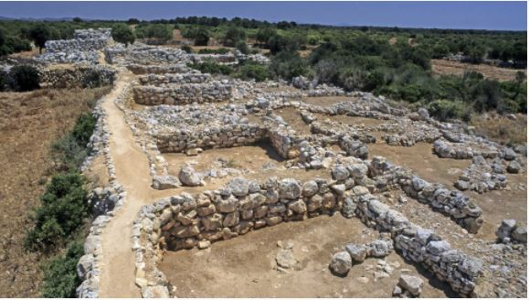

Informacion General
Capocorb Vell es uno de los poblados talayóticos más grandes de la isla, con una superficie de 6 mil metros cuadrados. Excavado por primera vez en 1918. Además, este yacimiento está muy bien conservado y se pueden contemplar perfectamente tanto su recinto amurallado como los 5 talayots que siguen en pie, uno de ellos tiene dos pisos de altura.
Lo curioso de este poblado es que continuó habitado hasta la Edad Media, algo muy poco común en este tipo de construcciones, es por ello que tuvo muchísimas modificaciones.
Las primeras excavaciones científicas fueron llevadas a cabo por el arqueólogo Josep Colominas Roca (1918) y fue declarado Monumento Histórico-Artístico en 1931.